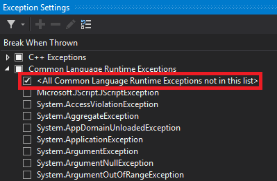

Full call stack not available
Warning
Приносим свои извинения за неудобства. Для этой страницы нет перевода на русский язык. Она будет отображаться на английском языке.
Depending on your Visual Studio settings, when an exception is thrown in Stride, Visual Studio might only show the call stack from the Stride runtime .DLL files or .NET framework assemblies, not user code.
To break as soon as an exception is thrown, add additional conditions to the Visual Studio Exception Settings.
In the Visual Studio toolbar, under the Debug menu, select Windows > Exception Settings.

Expand Common Language Runtime Exceptions and select All Common Language Runtime Exceptions not in this list. You might need to select other conditions too.

Tip
To restore the default list of exceptions, right-click and select Restore Defaults.
For more information about managing exceptions in Visual Studio, see Manage exceptions with the debugger in Visual Studio in the Microsoft Visual Studio documentation.